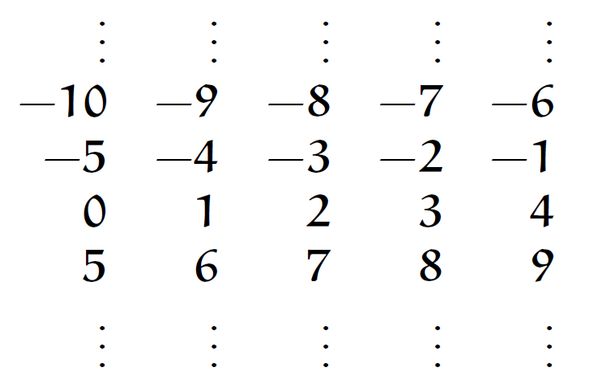

Libros y cuadernillos

Teoría elemental de los números para olimpiadas matemáticas
Año de publicación: 2010
Autor: David A. Santos
Temas:
- Principio del Buen orden
- Inducción
- Principio de las pichoneras de Dirichlet
- Divisibilidad y algoritmo de la división
- Máximo común divisor
- Números primos
- Algoritmo de Euclides
- Ecuaciones diofánticas lineales
- Funciones multiplicativas
- Función parte entera
- Congruencias
- Sistemas residuales
- Teorema de Fermat
- Teorema de Wilson
- Teorema de Euler
- Teorema chino del residuo
- Criterios de divisibilidad
Entrenamientos
Autor: Juan José Baldelomar Cabrera
Año de publicación: 2019
Autor: Emilio Toscano Oneto
Año de publicación: 2022
Autor: Joshua S. González Torres
Año de publicación: 2022
Autor: Myriam Hernández Ketchul
Año de publicación: 2018